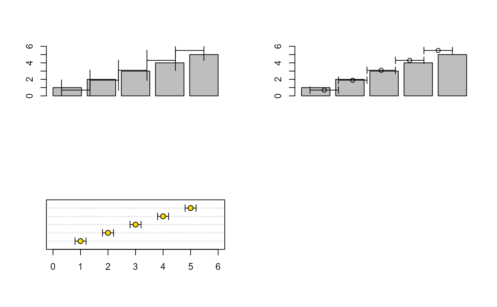

Add vertical or horizontal error bars to an existing plot.
Arguments
- from
Coordinates of the lower end of the error bars.
If
to = NULLandfromis a matrix:a 2-column matrix is interpreted as
cbind(from, to)a 3-column matrix is interpreted as
cbind(point, from, to)
- to
Coordinates of the upper end of the error bars.
- pos
Position of the error bars.
For vertical bars this corresponds to x-positions; for horizontal bars to y-positions.
- horiz
Logical; if
TRUE, horizontal error bars are drawn.- points
Optional point specification.
- ...
Additional graphical arguments passed to
arrows.
Value
Invisibly returns a list with components:
- from
Lower endpoints
- to
Upper endpoints
- pos
Positions of the error bars
- points
Point coordinates
Details
This is a lightweight wrapper around arrows with
optional point symbols added via points.
Additional graphical arguments in ... are passed to
arrows and may be used to control the appearance
of the error bars.
Common examples include:
col: line colorlwd: line widthlty: line typecode: which end caps to drawlength: length of the end caps
Point symbols may optionally be added:
points = TRUE: draw default points halfway betweenfromandtopoints = numeric: use these values as point coordinatespoints = list(...): fully specify point coordinates and graphical parameters
Example:
points = list(
val = estimate,
pch = 21,
bg = "gold",
col = "black",
cex = 1.2
)The default orientation is horizontal (horiz = TRUE), which
suits the typical use case of adding confidence intervals to a
dotchart. Set horiz = FALSE for vertical bars
on barplots or similar.
See also
Other graphics.utils:
abcCoords(),
axisBreak(),
barText(),
boxedText(),
colLegend(),
degToRad(),
lineSep(),
lineToUser(),
lines.lm(),
mar(),
preview(),
spreadOut(),
stamp(),
textLegend(),
titleRect(),
unit()
Examples
op <- par(no.readonly = TRUE)
par(mfrow = c(2, 2))
b <- barplot(1:5, ylim = c(0, 6))
errBars(
from = 1:5 - 0.5,
to = 1:5 + 0.5,
pos = b,
length = 0.15
)
# midpoint symbols
b <- barplot(1:5, ylim = c(0, 6))
errBars(
from = 1:5 - 0.5,
to = 1:5 + 0.5,
pos = b,
points = TRUE
)
# custom points
dotchart(1:5, xlim = c(0, 6))
errBars(
from = 1:5 - 0.2,
to = 1:5 + 0.2,
horiz = TRUE,
points = list(
val = 1:5,
pch = 21,
bg = "gold",
col = "black",
cex = 1.2
)
)
par(op)
